Login to Jackpot Server
Requires a stable internet connection
For security purposes, all communication goes to Redirect Server
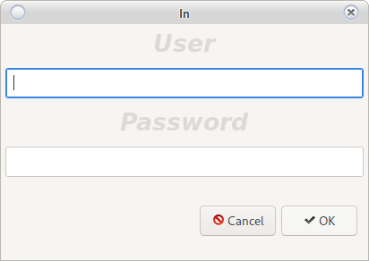
User: root
Password: 123456
Important!
After login, create your user and remove __root__
The user for logging in to the Jackpot Server does not depend on the user of the Reporting System
Main window
Main window of the settings program.
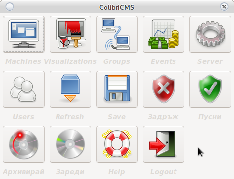
Machines
Introduction of a new machine in the Jackpot Server
To add or change machines from Server Reporting System
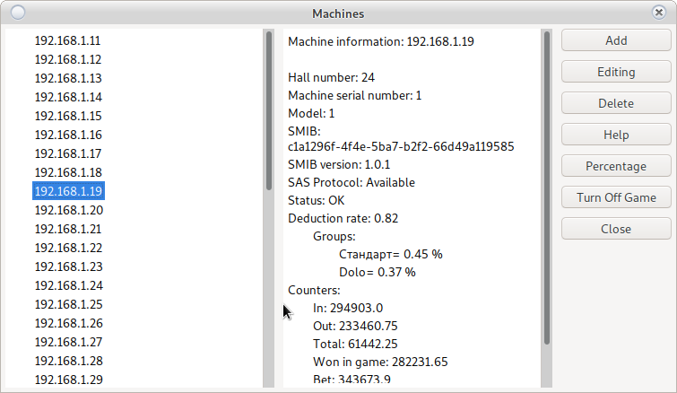
Changes will not take effect until they are saved on the server
Double click on a machine
Provides information about the machine and checks for a connection to Jackpot Server
Add
To add a new machine to Jackpot Server
Look at the IP address of the SMIB controller and which machine number in the hall corresponds to Home Screen, you will need to enter it.
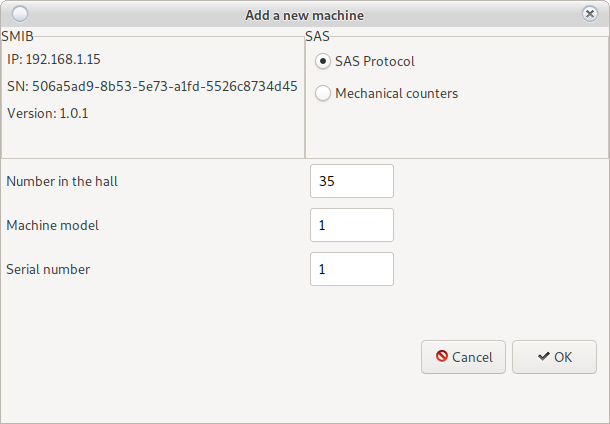
Enter the required information.
Do not use the option mechanical counters will be removed in future versions.
Use the Save button
Edit
Edit an existing machine
Select the machine you want to edit and use the Edit button
Change the required information.
Do not use the option mechanical counters will be removed in future versions.
Use the Save button
Delete
Removes machine from Jackpot Server
Select a machine and press the Delete button
Help
Opens current documentation
Percentage
Reduces SMIB controller deductions to all groups
At a value of 0.8 and a game of 1 lev (100 credits) the server will make a deduction of 80 credits.
Turn off the game
The selected game will not be credited to Jackpot Server
Example: Tape measure
Visualizations
Visualization settings
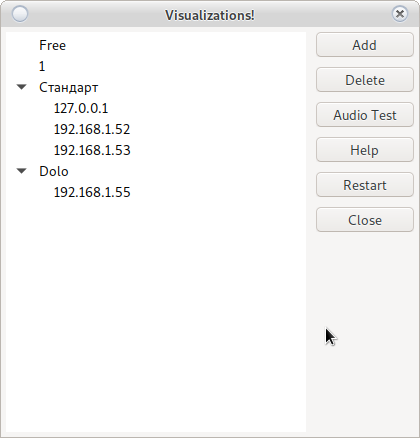
Visualizations can only participate in one group of mysteries
Free visualizations are not used and can be added to a new group.
Please release a preview before adding it to another group
Add
New and free visualization. It can be used for a new group or added to an existing one.
You may need to restart the new preview when initializing.
Delete
Removes the selected preview.
Make sure the group is not left without previews.
Audio Test
Sends a sound test signal to the selected preview.
Help
Opens current documentation
Restar
Restarts the selected preview
In development.
It may not work
Groups
Mystery group settings. Jackpot Server has no limit on the number of groups.
Groups like classic game can contain up to 5 levels.
Groups like time play can contain up to 2 levels
Groups like bombs have no limit on the number of levels, but they do not have their own visualization. They simply send a drop signal to a preview occupied by another group.
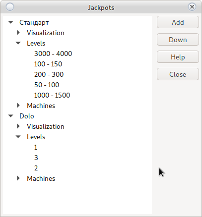
Add a new group
Use the add button. Names are free, but must be unique.
Enter a recognition name and select a game type.
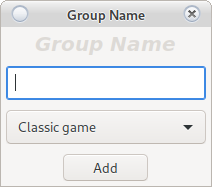
Use the Save button
The new group will appear in the main window.
Preview in a group
To add a new preview to the group, use the right button on the group name.
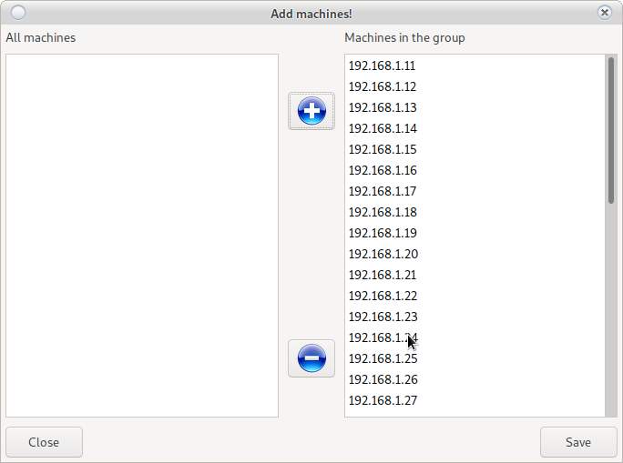
To add vizualizations to a group use button 
To remove vizualizations from group use button
Add a machine to a group
To add a machine to the group, use the right button on the group name.
To add machine to a group use button
To remove machine from group use button
Central group settings
This is a setting that is used in case no individual setting of level has been added.
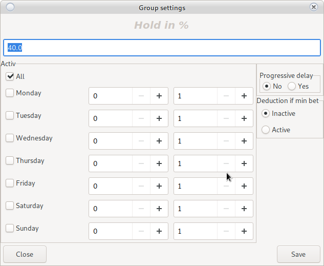
Retention in %
At 40% the mystery will keep 40% of the difference between Initial and __End____ value unless otherwise specified in the level itself.
Active
A day and time for the mystery group to be active. The rest of the time it is locked and does not rotate.
Progressive delay
The higher the mystery, the slower it counts.
Minimum bet deduction
When set Minimum BET for a fall, the mystery will not count if the game is weak from the minimum BET
Add a level
Use the right button on the group name
Depending on the selected type of game are divided into three types
Classic game
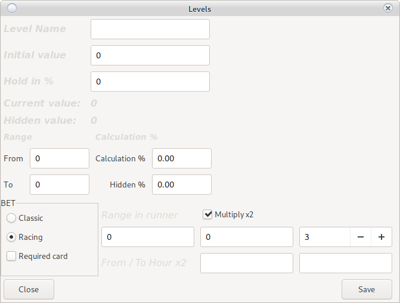
Attention!
In a race, when a player is inactive for more than 3 minutes
The server will remove the player from the participants and will reset all the bet
he has accumulated
-
Enter a unique name for recognition
-
Base is the amount from which the mystery of initialization will begin
After falling to the base will add the value of the accumulated hiden
At initialization to borrow an initial value at will otherwise the mystery will starts with an amount of 0
If you do not want to have an Initial Value, after saving to the server, open in edit mode and make the base amount 0
-
Retention in% is the retention of a certain% before falling
If you enter a value of 40 for a mystery with limits of 100-200, the mystery will fall after BGN 140.
Leave 0 to disable the
option If the hold rate is set in group settings and this option is disabled it will the group setting will be used This option has a higher priority, in case of activation the group setting will be ignored. -
From the amount
The amount at which the mystery will enter active fall mode
-
Up to the amount
The amount that the mystery should not exceed
-
Deduction in %
1 equates 1% per 100 credits = 1 credit
at a ratio of 0.01 one credit = 0.01 stotinki
Look at the set factor of the machineAttention!
For machines with a ratio other than 0.01, the mystery will not fall on credit,
due to inability to pay the full amount.
Pay the amount by hand! -
Hidden %
Percentage for deduction of hidden hiden value
1 equates 1% per 100 credits = 1 credit
at a ratio of 0.01 one credit = 0.01 stotinki
Look at the set factor of the machine. -
Classic mystery
After reaching a random amount, the mystery will fall into the credit of the machine
-
Racing mystery
Once a random amount is reached, the mystery will enter racing mode Will declare a value to fall All competitors start from 0
The contestants with the most accumulated bet will appear on the scoreboard
After reaching the pre-announced amount, the server will decide who the winning player is.Attention!
Only players raised on the board have a chance to win
The biggest bet doesn't have to be a win-win.
The accumulated bet only increases the chance.``` Total Bet = 100 Total players = 3 Player 1 bet = 50 Player 2 bet = 30 Player 3 bet = 20
Player one has a 50% chance of winning. ```
-
Range in competition
Two amounts from which an amount will be chosen which will be added to the amount of the mystery when entering a race.
Attention!
It is possible that the mystery exceeds the amount set in the field To amountAmount up to = 100 Mystery enters race mode = 90 Adds random value between ranges in races: 10 to 50 Selects a random value 20 Announces a drop of BGN 110* Number of players in a competitionFrom 2 to 5 players on the board
-
X2
In a certain interval of time the sum of the mystery will be multiplied by 2
Attention!
With a mystery value of 100 and an active option from 19 to 20 hours:
If the mystery falls in the time interval, its value will be 100 * 2 -
Minimal bet
Not used in competition. This is the minimum amount a player must spin, to win a mystery.
-
Mandatory card
Requires card momul.
In the absence of a client card, the mystery does not deduct.
Time game
This is a time-falling game and there is no upper limit on the amount accumulated.
Maximum number of levels 2.
Attention!
Mysteries of the time type can fall only once in the specified time interval
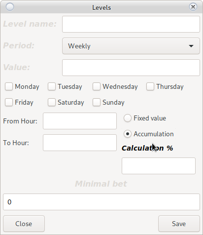
-
Name
The name must be unique
-
Period
-
Living room
The mystery will be activated every day in the specified time interval
-
Weekly
Select the days on which you want the mystery to be activated
-
-
Value
This is a value from which the mystery will always begin after a fall.
-
From Hour
Time for the mystery to enter Active mode
-
Until Time
Time for the mystery to enter Inactive mode
-
Fixed value
The mystery does not accumulate. The declared value falls.
-
Accumulation
The mystery accumulates with the deduction rate
Attention!
If the mystery does not fall within the specified interval, its value will not be reset.
It will be transferred in the next time intervalDay one initial value = BGN 50 At the end of day 1 accumulated = BGN 10 Day 2 initial value = BGN 60 End of day 2 accumulated = BGN 50 Day 3 initial value = BGN 110 Fall and end of day 3 Day 4 initial value = BGN 50 -
Minimal bet
A bet over which a player must play to win the mystery.
Bombs
The difference with Time play is:
-
no limit on the number of levels
-
Does not require its own visualization
-
Time intervals can contain minutes
18.15 = 6 hours and 15 minutes.
Help
Opens the current documentation
Events
Reports of fallen mysteries
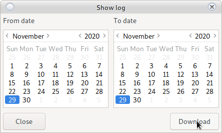
View Reports
Server
Server information and rental server activation
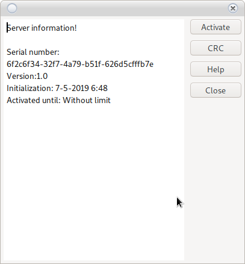
Activate
Extends the date of operation of a rental server.
Contact with Grigor Kolev
CRC
Calculates and checks whether the CRC of the server corresponds to the version registered in DKH
Any unauthorized change will cause the Jackpot Server to be blocked.
Help
Opens the current documentation
Users
User Management on Jackpot Server.
Jackpot Server users are independent of system users
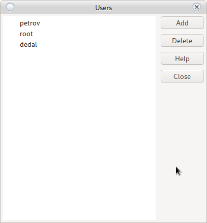
Add
Adds a new user
Remove
Select a user to remove and use the Delete button
Attention!
Remove all users or forgot password
will not interfere with the operation of the server.
But access to settings will be revoked without the possibility of recovery.
Help
Opens the current documentation
Refresh
Retrieves the necessary information from the server to change the settings
Attention!
If you are unsure of the settings you have made
Re-grow. This will remove all changes.
Attention!
Make sure you have a stable internet connection with the server.
If the information is recorded incorrectly, try saving again
Attention!
The information is transmitted through technology __Key, Value__
Each key must be stored in and intact or will not be saved
In case of communication interruption, it is possible to save one change, not another.
We recommend changes to the server from __local network__
Write it down
Saves all changes to the server.
Attention!
Do not make changes to the server during intense gameplay
Hold
Stops the rotation of the server.
All mysteries will stop the deduction
Play
Starts server rotation.
All mysteries will begin to count.
Archive
Creates an archive of information from the Jackpot Server
Please use this option, it is not placed accidentally.
You can make archives in for many casinos, but only the last one for one casino will be active.
Load
Loads information from a created archive.
Help
Opens the current documentation
Exit
Exit the program and serve in login window